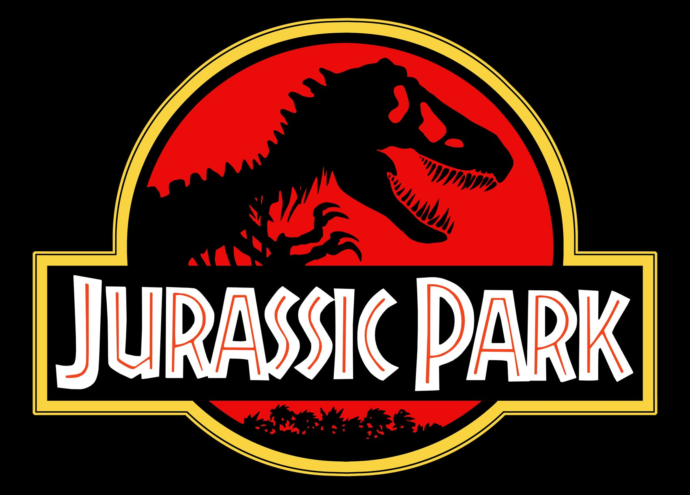
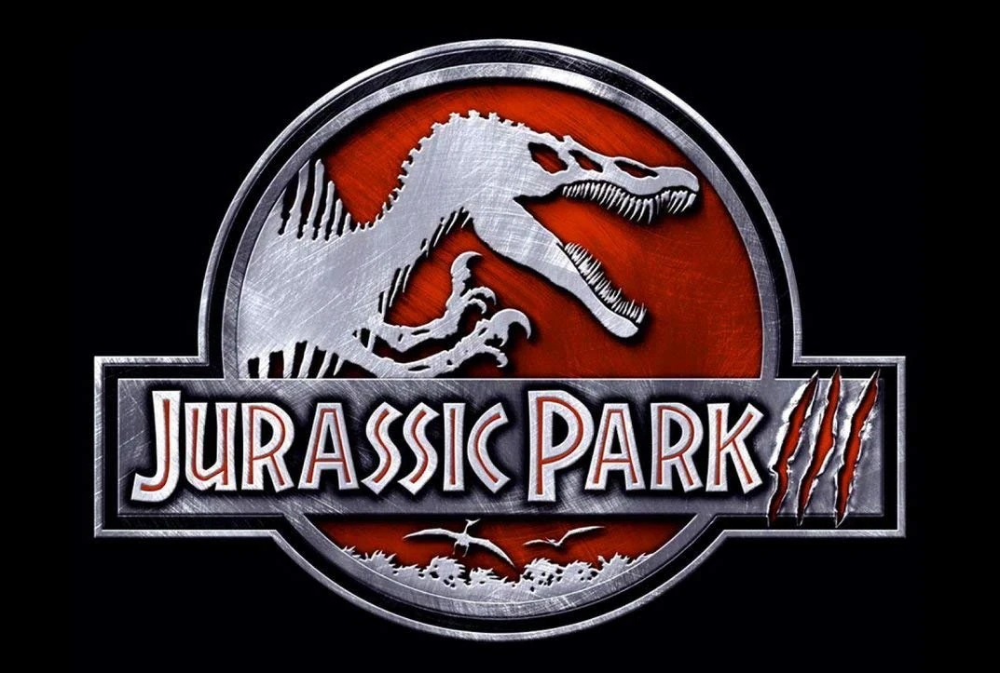
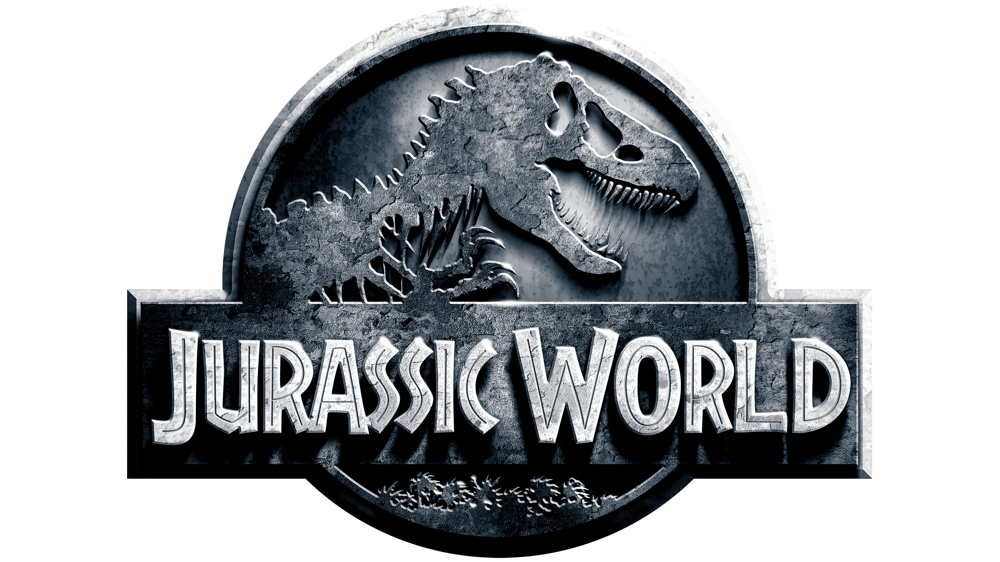
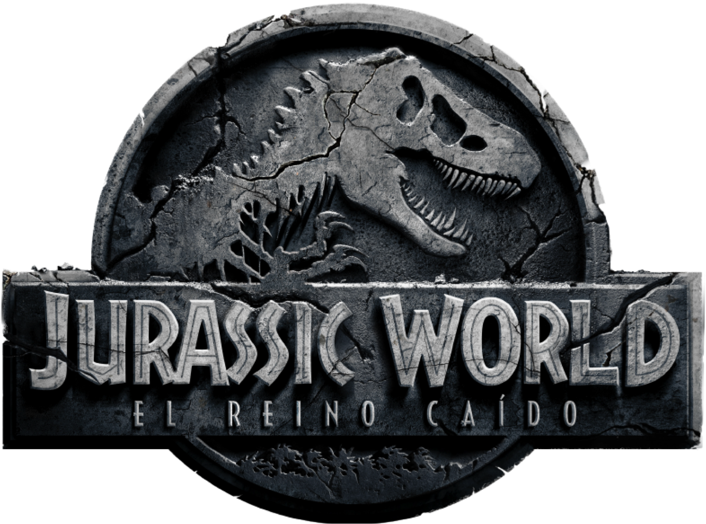
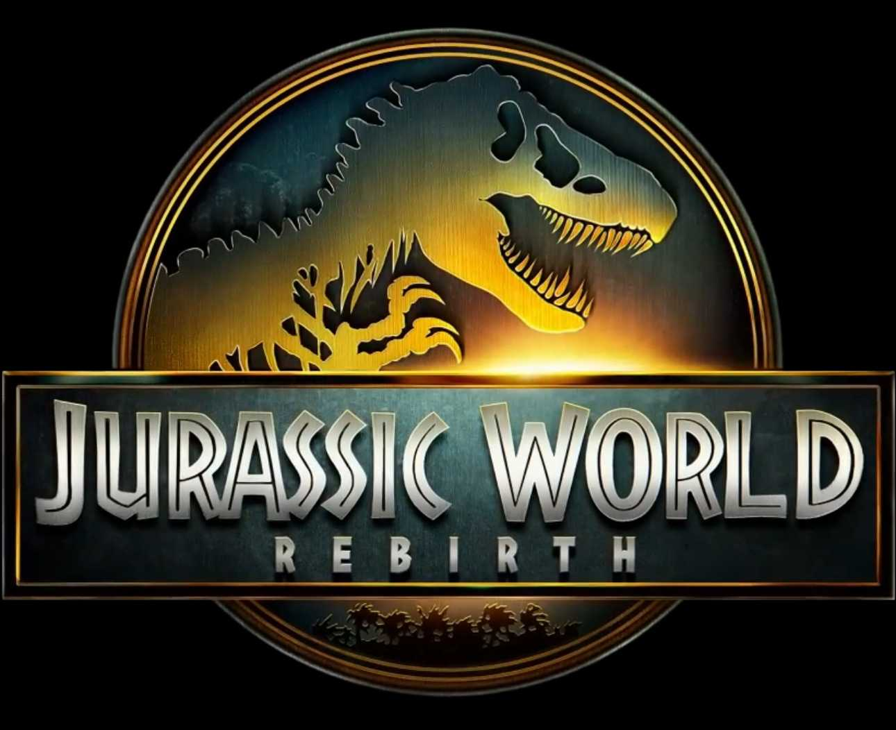

Jurassic Park
John Hammond invita a los paleontólogos Alan Grant y Ellie Sattler, al matemático Ian Malcolm y a sus dos nietos a recorrer Jurassic Park, un parque en Isla Nublar poblado por dinosaurios clonados. Cuando una tormenta tropical y el sabotaje de un empleado desactivan las vallas eléctricas, los visitantes deben sobrevivir mientras los animales campan a sus anchas.
| Año | Director | Tráiler | Portada |
|---|---|---|---|
| 1993 | Steven Spielberg | Buscar tráiler |  |
The Lost World: Jurassic Park
Cuatro años después de los sucesos de Isla Nublar, Ian Malcolm viaja a la Isla Sorna (el "Sitio B", donde se criaban los dinosaurios) para rescatar a su pareja. Allí se encuentra con un equipo de caza enviado por InGen para capturar ejemplares y llevarlos a San Diego, desatando una lucha por la supervivencia en territorio salvaje.
| Año | Director | Tráiler | Portada |
|---|---|---|---|
| 1997 | Steven Spielberg | Buscar tráiler |  |
Jurassic Park III
Un matrimonio divorciado convence con engaños a Alan Grant para sobrevolar la Isla Sorna con la excusa de hacer de guía. Tras un aterrizaje forzoso, el grupo queda atrapado buscando a su hijo desaparecido mientras es perseguido por un Spinosaurus y un grupo de velocirraptores particularmente astutos.
| Año | Director | Tráiler | Portada |
|---|---|---|---|
| 2001 | Joe Johnston | Buscar tráiler |  |
Jurassic World
Veintidós años después del desastre original, Isla Nublar alberga un parque temático plenamente operativo y de gran éxito. Para mantener el interés del público, los científicos crean un híbrido modificado genéticamente, el Indominus rex, cuya inteligencia y camuflaje provocan una fuga masiva que Owen Grady y Claire Dearing deben intentar contener.
| Año | Director | Tráiler | Portada |
|---|---|---|---|
| 2015 | Colin Trevorrow | Buscar tráiler |  |
Jurassic World: El reino caído
Con el volcán de Isla Nublar a punto de entrar en erupción y extinguir de nuevo a los dinosaurios, Claire y Owen participan en una operación para poner a salvo a las especies clave. Pronto descubren que el rescate esconde un plan para subastar animales y desarrollar nuevas armas biológicas en una mansión.
| Año | Director | Tráiler | Portada |
|---|---|---|---|
| 2018 | J. A. Bayona | Buscar tráiler |  |
Jurassic World: Dominion
Cuatro años tras la destrucción de Isla Nublar, los dinosaurios viven repartidos por todo el planeta junto a los humanos. La historia sigue la búsqueda de Maisie y de una cría de Blue, la investigación de una plaga de langostas gigantes vinculada a Biosyn y el reencuentro de Ellie, Alan e Ian para destapar el plan.
| Año | Director | Tráiler | Portada |
|---|---|---|---|
| 2022 | Colin Trevorrow | Buscar tráiler |  |
Jurassic World: Rebirth
Ambientada años después de los acontecimientos anteriores, una expedición se adentra en zonas tropicales aisladas donde aún subsisten los dinosaurios más grandes. Su objetivo es recolectar muestras de ADN de tres especies gigantes para fabricar un fármaco con beneficios médicos revolucionarios para la humanidad.
| Año | Director | Tráiler | Portada |
|---|---|---|---|
| 2025 | Gareth Edwards | Buscar tráiler |  |